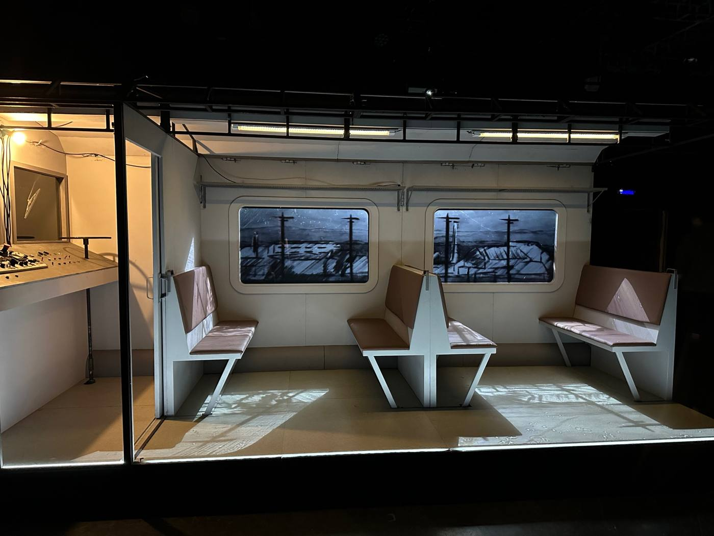
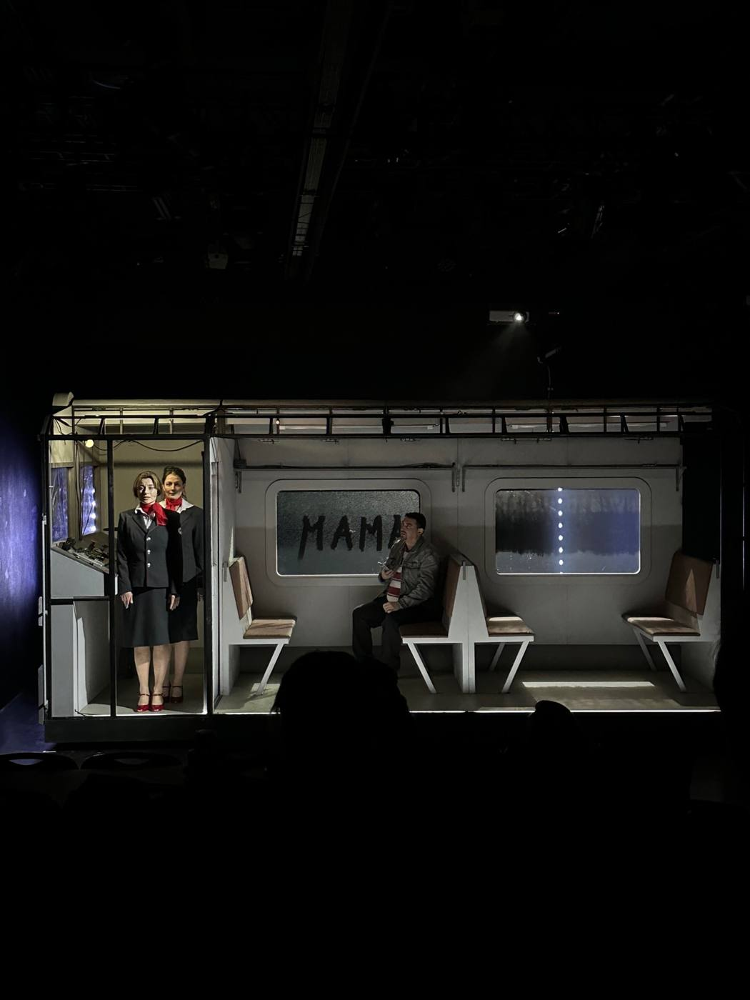

Пустые поезда
РАМТ
режиссер Алексей Золотовицкий
художник-постановщик Софья Егорова
2025
Видеохудожник
режиссер Алексей Золотовицкий
художник-постановщик Софья Егорова
2025
Видеохудожник

О проекте
Видеоконтент встроен непосредственно в пространство вагона и существует как часть сценографии, а не как отдельный экран.
Страница проекта ↗Фрагмент видеоконтентаkk_kitkate


РАМТ · 2025
Все проекты →